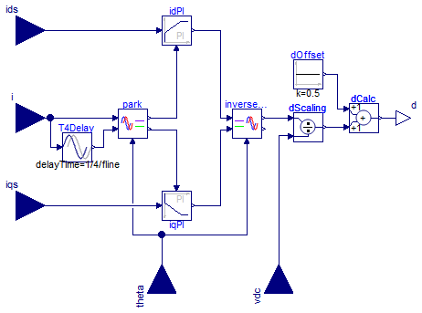
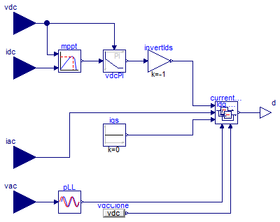

Block assemblies useful in PV and power electronics
Block assemblies useful in PV and power electronics
Extends from Icons.AssembliesPackage (Icon for packages of assemblies).
| Name | Description |
|---|---|
| Maximum Power Point Tracking Controller | |
| Inverter1phCurrentController | Simple synchronous reference frame PI current controller |
| Inverter1phCompleteController | Complete synchronous reference frame inverter controller |
Maximum Power Point Tracking Controller

Maximum power-point tracking controller. Given the DC voltage and current, this controller will output a moving reference for a DC voltage control loop in order to maximize the power extracted from a PV array for a given (unknown) solar irradiation and junction temperature.
The operation of the block can be customized by setting the following parameters:
Extends from Modelica.Blocks.Interfaces.SI2SO (2 Single Input / 1 Single Output continuous control block).
| Type | Name | Default | Description |
|---|---|---|---|
| Time | sampleTime | 1 | Sample time of control block [s] |
| Voltage | vrefStep | 5 | Step of change for vref [V] |
| Power | pkThreshold | 1 | Power threshold below which no change is considered [W] |
| Voltage | vrefStart | 10 | Voltage reference initial value [V] |
| Type | Name | Description |
|---|---|---|
| input RealInput | u1 | Connector of Real input signal 1 |
| input RealInput | u2 | Connector of Real input signal 2 |
| output RealOutput | y | Connector of Real output signal |
Simple synchronous reference frame PI current controller

Synchronous reference frame current controller for a 1-phase inverter. It takes the measured and the dq setpoints and calculates the duty cycle, which can be then used as the input to the SignalPWM block in switching models or directly as the input of the switch or converter in averaged models.
The control is performed with two LimPID blocks (one per component) configured as a PI controller.
Extends from Modelica.Blocks.Icons.Block (Basic graphical layout of input/output block).
| Type | Name | Default | Description |
|---|---|---|---|
| Real | k | 0.1 | PI controllers gain [1] |
| Time | T | 0.01 | PI controllers time constant (T>0 required) [s] |
| Frequency | fline | 50 | AC line frequency [Hz] |
| Real | idMax | Modelica.Constants.inf | Maximum effort for id loop |
| Real | iqMax | Modelica.Constants.inf | Maximum effort for iq loop |
| Type | Name | Description |
|---|---|---|
| input RealInput | i | Sensed current |
| input RealInput | ids | Current d component setpoint |
| input RealInput | iqs | Current q component setpoint |
| input RealInput | theta | Sensed AC voltage phase |
| input RealInput | vdc | Sensed DC voltage |
| output RealOutput | d | Duty cycle output |
Complete synchronous reference frame inverter controller

An additional LimPID block is used to closed the DC voltage loop around the d component of the AC current, using Inverter1phCurrentController.
Currently, this block doesn't provide control of the q component, which is set to 0.
Extends from Modelica.Blocks.Icons.Block (Basic graphical layout of input/output block).
| Type | Name | Default | Description |
|---|---|---|---|
| Real | ik | 0.1 | Current PI gain |
| Time | iT | 0.01 | Current PI time constant [s] |
| Real | idMax | Modelica.Constants.inf | Maximum effort for id loop |
| Real | iqMax | Modelica.Constants.inf | Maximum effort for iq loop |
| Real | vk | 0.1 | Voltage PI gain |
| Time | vT | 0.01 | Voltage PI time constant [s] |
| Real | vdcMax | Modelica.Constants.inf | Maximum effort for vdc loop |
| Frequency | fline | 50 | Line frequency [Hz] |
| Type | Name | Description |
|---|---|---|
| input RealInput | iac | AC current sense |
| input RealInput | vac | AC voltage sense |
| input RealInput | idc | DC current sense |
| input RealInput | vdc | DC voltage sense |
| output RealOutput | d | Duty cycle |